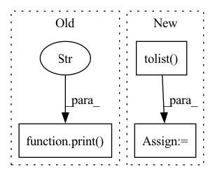

Pattern ID :32493
Before Change
x = x.to(pl_module.device)
with torch.no_grad():
pl_module.eval()
print("fuck" )
//generate sample with image provided
x_rec = pl_module.generate_images(text=text, img = x, filter_thres=0.9) // topk sampling at 0.9
print("fuck")
//generate sample without imageAfter Change
if trainer.global_step % self.every_n_steps == 0:
text, x = batch
sample_text = text[:1]
token_list = sample_text.masked_select(sample_text != 0).tolist()
decoded_text = self.tokenizer.decode(token_list)
text = text.to(pl_module.device)
x = x.to(pl_module.device)
with torch.no_grad():In pattern: SUPERPATTERN
Frequency: 7
Non-data size: 3
Instances Fragment ID: 94691436
Project Name: tgisaturday/dalle-lightning
Commit Name: d5154f7e185c7b737a7bb3b9f1f9048d811cab37
Time: 2021-07-26
Author: jamesk1228@gmail.com
File Name: pl_dalle/callbacks.py
M Class Name: DalleImageSampler
N Class Name: DalleImageSampler
M Method Name: on_train_batch_end(7)
N Method Name: on_train_batch_end(7)
M Parent Class: Callback
N Parent Class: Callback
M File Name: pl_dalle/callbacks.py
N File Name: pl_dalle/callbacks.py
M Start Line: 206
M End Line: 209
N Start Line: 202
N End Line: 246
Before Change
def rfe(self, step=1, rfe_features=1, num_features=20):
if "rfe_feature_rank" not in self.__dict__.keys():
print ("Running Recursive Feature Elimination with" ,len(self.feature_names),"features. This might take some time. Please wait.")
selector=RFE(estimator=self.classifier, n_features_to_select=rfe_features, step=step)
selector.fit(self.train_features, self.train_labels)
self.rfe_feature_rank=selector.ranking_
df= pd.DataFrame(list(zip(self.feature_names, self.rfe_feature_rank.tolist())), columns=["Feature", "Rank"])After Change
self.selector.fit(self.train_features, self.train_labels)
self.rfe_feature_rank=self.selector.ranking_
df= pd.DataFrame(list(zip(self.feature_names, self.rfe_feature_rank.tolist())), columns=["Feature", "Rank"])
best_features_names= [x for x,v in list(zip(G.feature_names, G.selector.support_.tolist() )) if v==True]
best_features_scores=df.sort_values(by=["Rank"], ascending=True)
best_features_table=self.feature_table[best_features_names+[self.label_column]]
return best_features_scores, best_features_names, best_features_table Fragment ID: 94691444
Project Name: radtorch/radtorch
Commit Name: a4dccc68cb4935fe0222e31d045079d0523ea640
Time: 2020-04-11
Author: elbanan@users.noreply.github.com
File Name: radtorch/test.py
M Class Name: Feature_selection
N Class Name: Feature_selection
M Method Name: rfe(3)
N Method Name: rfe(4)
M Parent Class: Classifier
N Parent Class: Classifier
M File Name: radtorch/test.py
N File Name: radtorch/test.py
M Start Line: 171
M End Line: 179
N Start Line: 170
N End Line: 175
Before Change
if diff_count == 1.0:
diff_numpy = diff.numpy()
index_list = np.where(diff_numpy >= 1.0)
print("index_list:" , index_list) if debug else None
index = index_list[1][0]
if index not in worker_type_list and index not in supply_type_list:
previous_bo.append(index)
After Change
index = torch.nonzero(diff, as_tuple=True)[-1]
print("index:", index) if debug else None
index = index.detach().cpu().numpy().tolist()
previous_bo.extend(index)
return previous_bo
Fragment ID: 94691446
Project Name: liuruoze/mini-alphastar
Commit Name: a115d8c35ded3fa3d608df5576d72a17cf941787
Time: 2021-12-10
Author: liuruoze@163.com
File Name: alphastarmini/lib/utils.py
M Class Name: AnonimousClass
N Class Name: AnonimousClass
M Method Name: calculate_build_order(3)
N Method Name: calculate_build_order(3)
M Parent Class:
N Parent Class:
M File Name: alphastarmini/lib/utils.py
N File Name: alphastarmini/lib/utils.py
M Start Line: 126
M End Line: 145
N Start Line: 111
N End Line: 135
Before Change
tokenizer,
output_data.transpose([1, 2, 0]).tolist()[0][0], bos_id, eos_id)
print("Model input:", inputs)
print("Result:" , result)
if __name__ == "__main__":
args = setup_args()After Change
output_data = output_data.transpose([1, 2, 0])
// Only use the best sequence.
result = [
postprocess_response(tokenizer,
sample.tolist() [0], bos_id, eos_id)
for sample in output_data
]
print("Model input:", inputs) Fragment ID: 94691441
Project Name: paddlepaddle/paddlenlp
Commit Name: 521fd43191192a3a828b2ae2cd226e4264f99a91
Time: 2022-09-27
Author: 380185688@qq.com
File Name: paddlenlp/ops/faster_transformer/sample/mbart_inference.py
M Class Name: AnonimousClass
N Class Name: AnonimousClass
M Method Name: infer(1)
N Method Name: infer(1)
M Parent Class:
N Parent Class:
M File Name: paddlenlp/ops/faster_transformer/sample/mbart_inference.py
N File Name: paddlenlp/ops/faster_transformer/sample/mbart_inference.py
M Start Line: 56
M End Line: 90
N Start Line: 61
N End Line: 113
Before Change
optimizer = optim.Adam(train_params, lr=self.poison_lr)
criterion = nn.CrossEntropyLoss()
print("fine-tuning" )
self.model.cuda()
loss, n_sample = 0.0, 0
self.model.train()After Change
int(all_num*self.fine_tune_set_ratio),
replace=False)
fine_tune_imgs = torch.tensor(self.yt_imgs.tolist()+self.ynt_imgs.tolist() )[fine_tune_inds]
fine_tune_labels = torch.tensor(self.yt_labels.tolist()+self.ynt_labels.tolist())[fine_tune_inds]
// only update last layer parameters Fragment ID: 94691437
Project Name: ain-soph/trojanzoo
Commit Name: e1fa2f5536d966e225a2d40eddb80b9725daca34
Time: 2020-06-27
Author: zxx5113@lrs-twang01.ist.psu.edu
File Name: trojanzoo/attack/backdoor/latent_backdoor.py
M Class Name: Latent_Backdoor
N Class Name: Latent_Backdoor
M Method Name: student_fine_tuning(1)
N Method Name: student_fine_tuning(1)
M Parent Class: BadNet
N Parent Class: BadNet
M File Name: trojanzoo/attack/backdoor/latent_backdoor.py
N File Name: trojanzoo/attack/backdoor/latent_backdoor.py
M Start Line: 231
M End Line: 249
N Start Line: 248
N End Line: 269
Before Change
src_ids = X[:, 0, 0].squeeze().tolist() // (1, 2, 2, L) -> (1, L) -> (L) -> list
pred_ids = transformer.predict(X).squeeze().tolist() // (1, L) -> (L) -> list
print([tokenizer.id_to_token(src_id) for src_id in src_ids])
print("->" )
print([tokenizer.id_to_token(pred_id) for pred_id in pred_ids])
if __name__ == "__main__":After Change
transformer = fetch_transformer(run, config["model"], config["ver"])
transformer.eval()
X = InferInputsBuilder(tokenizer, config["max_length"])(srcs=[config["kor"]])
src_ids = X[0, 0, 0].tolist() // (1, 2, 2, L) -> (L) -> list
pred_ids = transformer.predict(X).squeeze().tolist() // (1, L) -> (L) -> list
pred_ids = pred_ids[: pred_ids.index(tokenizer.eos_token_id)] // noqa
print(tokenizer.decode(ids=src_ids), "->", tokenizer.decode(ids=pred_ids)) Fragment ID: 94691439
Project Name: eubinecto/the-clean-transformer
Commit Name: fec218b75568e8fe876d9015cb2cd186661303ef
Time: 2021-12-11
Author: eubinecto
File Name: main_infer.py
M Class Name: AnonimousClass
N Class Name: AnonimousClass
M Method Name: main(0)
N Method Name: main(0)
M Parent Class:
N Parent Class:
M File Name: main_infer.py
N File Name: main_infer.py
M Start Line: 13
M End Line: 26
N Start Line: 17
N End Line: 24